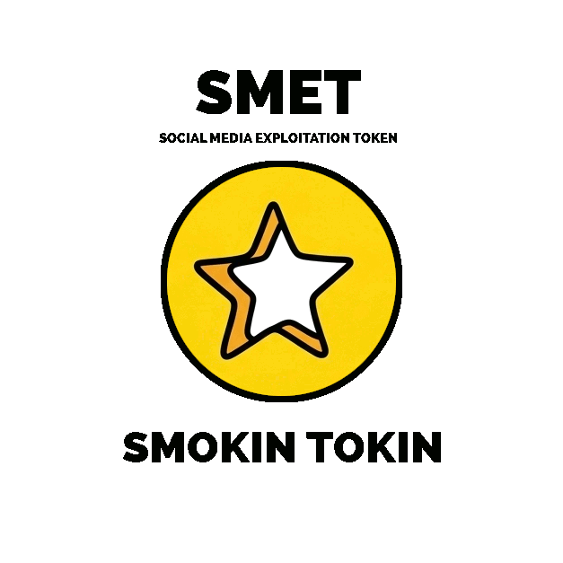

The SMET was inspired by Gayle and Dale.
We folks of the Weird Birds Rogue's Harbor Syndicate have got an "ask" for you.
If you see someone talking on Facebook or elsewhere on social media about PanderThings, please just politely - give them a SMET (Social Media Exploitation Token) - you can use the image above - and refer them (KINDLY) to this web page.
WHY?
Because sociological markers show that PanderThings have a lot of the markers for becoming "a fad". And that would frankly suck. That would mean PanderThings would loose important layers of aura, Meaning basically the experience, the interaction wouldn't be so fun or meaningful. Think hula-hoop. Now panderThings are fun, but they need to point OUTWARD. They're not much in themselves actually. In reality, they're mostly FAKE!! In fact, mostly ai-generated. But that by no means precludes a fantastically rich, aura-laden experience for you and your friends.
Look at it this way. Someone in some Facebook group is gonna say PanderThings are better or worse than some other thing that Logan County peepz really love. And then someone's gonna object. It will get more vehement, and then there will be folks taking this view, and that view, and - before you know it, it's dumpster fire like the last "BBQ War". Or PanderThings will become politicized. Or wutnot.
INSTEAD - if you really WANNA talk about PanderThig - do it in a local park. The local library. At The Flying Pig. At a friend's house. When you're not being hasty-scrolly. Preferably on a rickety porch, with some sweet tea.
AFTER you give someone a SMET, suggest maybe a "talk around" alternative talk. LIKE: There are a lotta banjos in PanderThing's Kentucky Listens soundtrack. Did you know that the banjo came to Kentucky via Africa? Slaves knew about the kora, an instrument made from a gourd with a skin stretched over it. OR talk about the great work Robyn is doing at The Robyn's Nest, keeping an independent boutique open in Russellville. WHY? The banjo, the kora, and Robyn's are pretty much "fad-proof." And you're less likely to find yourself in the middle of a dumpster fire in a day or two. AND you're doing a lot in spreading culture and locally owned business awareness as well. And the folk of the Rogue Harbor Weird Birds Syndicate are private folk and don't really NEED talking about in the way that banjo's and Robyn's Nest DO.
panderThings and the folks that make them have gotta stay quiet and modest or - they just won't be able to do the kinna work they're sposed to.
who DO we encourage to talk about panderThings at this point, where can you go for more talk about this stuff? Some of the local media we wanna support.
discover. together.